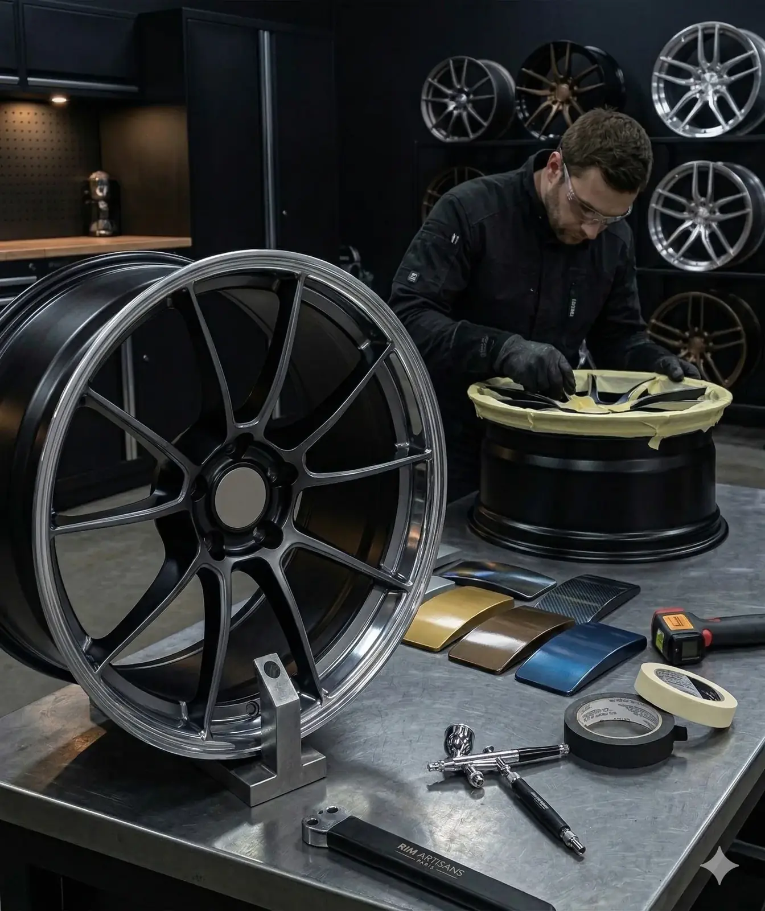

Prestation 04
Votre véhicule est unique. Vos jantes aussi devraient l'être. De la couleur Pantone exacte au bi-ton sportif en passant par le poli diamant — on réalise votre vision.

Nos finitions
Branches et face en deux couleurs distinctes. Un classique du tuning premium — toujours saisissant.
Brossage directionnel de l'aluminium pour un rendu industriel et moderne. Très tendance sur les SUV.
Polissage au tour à diamant pour une face miroir. La finition la plus exclusive, prisée par les marques premium.
N'importe quelle couleur du nuancier RAL ou Pantone, en mat, satiné ou brillant. Teinte assortie à la carrosserie possible.
Bronze, or, champagne, vert kaki, bordeaux — les finitions qui font la différence et vous démarquent.
Vous avez une idée précise ? On en parle ensemble et on trouve la meilleure façon de la réaliser.
Notre engagement
Nous utilisons un spectrophotomètre pour analyser et reproduire les teintes existantes à l'identique. Pour les créations, on travaille à partir du nuancier RAL ou Pantone, avec validation d'un échantillon avant application finale.
Choisir
Méthode
Pour reproduire une teinte existante, nous l'analysons au spectrophotomètre afin de l'obtenir à l'identique. Pour une création, nous partons du nuancier RAL ou Pantone et faisons valider un échantillon avant l'application finale : vous savez exactement ce que vous obtiendrez.
Les peintures utilisées sont des peintures professionnelles bi-composant, protégées par un vernis résistant aux UV. Avec un entretien normal, la finition tient plusieurs années.
Délais et budget
Comptez en général 2 à 4 jours selon la finition, et jusqu'à 5 jours pour le poli diamant et le bi-ton, qui demandent plus d'étapes. Le tarif dépend du type de finition et du nombre de jantes : devis gratuit sous 24 h à partir de vos photos. À titre de repère, la rénovation d'une jante commence à 130 € HT.
À lire aussi
Questions fréquentes
Oui. Nous travaillons avec toutes les références RAL et Pantone, en finition mate, satinée ou brillante. Nous pouvons aussi reproduire exactement la couleur de votre carrosserie grâce à notre spectrophotomètre.
Le tarif dépend du type de finition (bi-ton, poli diamant, couleur RAL) et du nombre de jantes. Envoyez vos photos au 06 61 45 35 27 pour un devis gratuit sous 24h.
Le poli diamant est une technique d'usinage au tour à diamant qui donne une face miroir à la jante. C'est la finition la plus exclusive, utilisée par BMW, Audi et Porsche sur leurs séries haut de gamme.
En général 2 à 4 jours selon la finition choisie. Le poli diamant et le bi-ton nécessitent plus d'étapes et peuvent prendre jusqu'à 5 jours.
Oui. Nous utilisons des peintures bi-composant professionnelles avec vernis UV résistant, identiques à celles des constructeurs automobiles. Avec un entretien normal, la finition tient plusieurs années.
Partagez votre idée — on vous propose un devis et une simulation de couleur.